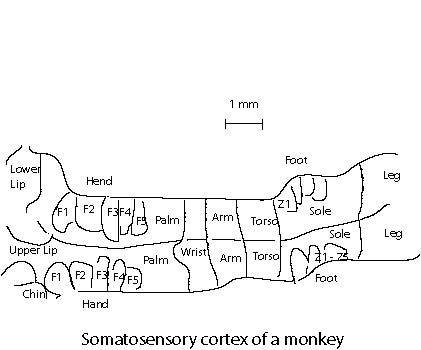

It is found that the brain for higher animals are organized into domains for specific functions. The visual cortex processes the information from eyes. The hearing is handled by the auditory cortex, and somatosensory cortex maps the surface of body. These regions are organized in such a way so that similar outside stimulus causes excitation in a similar region. The figure below shows schematically the somatosensory cortex as a map of the body surfaces of the monkey. Note that the very sensitive body area corresponds to a larger area in the brain.

The Kohonen model attempts to emulate the above biological fact. It is based on the winner-take-all principle. When the neurons received outside signals, each of which computes the "local field"
yi = wi xT = Si wij xj
In a winner-take-all network, only one neuron with the largest yi fires. This is in contrast with the linear model in which the output is just yi itself, or the nonlinear model, which is fed into a nonlinear function q(yi). We note that maximizing wixT (with respect to w) is equivalent to minimizing
| wi - x |
under the condition that |w| = 1, where |x| is the two-norm of vector x. Please proof the above claim. (Hint: consider dot product).
There are several additional ingredients in the Kohonen model. The input signal x (a vector of dimension N) is fed into all the neurons which is set on a line (1 dimension) or lattice (two dimensions). This feature models the fact the brain is mostly a two-dimensional sheet. And the brain part responsible for hearing is one dimensional. Let i* be the neuron such that |wi*-x| is a minimum with respect to i for the input signal x. The learning of the Kohonen model is accomplished by
wj <- wj + e h(j,i*) (x - wj) (1)
where e is the learning rate, vector wj is the synaptic strength of neuron j, x is input vector, h(j,i*) is a function that is peaked around the site i* and decays to zero for neurons far away from i*. A commonly used function is the Gaussian function
h(j,i*) = exp[-dji*2/(2s)]
where dji* is the Euclidean distance between site i* and j. The first term x h(j,i*) of Eq.(1) is essentially the Hebbian learning rule, the second term adds a damping. The effect of the learning is to move the vector w closer to x. This learning rule is closely related to something called learning vector quantization used for data compression.
One last ingredient algorithmically is that both the learning rate e and the domain of influence s must decrease with the learning steps, in order for w to converge. For example, we may take
e = e0/na, s = s0/nb
where n is the learning step and 0 < a < 1, 0 < b < 1.
What do we expect the above network model to do? It is quite surprising that starting with random w, the network organizing itself in such a way such that similar inputs get neurons at similar region to fire, as is the case biologically. We can use such neural network to do classification or even solve optimization problems such as traveling-salesman problem. Assuming that x is drawn from a static probability distribution, then the network denotes more neurons to the values of x that appears more frequently. It was hoped initially that the numbers of neurons involved in handling x in a neighborhood of x is proportional to P(x). But this is not true. In one dimension, it can be shown that it is proportional to P(x)2/3 instead.
In the Mathematica Program, we show some examples of the operations of the Kohonen model.